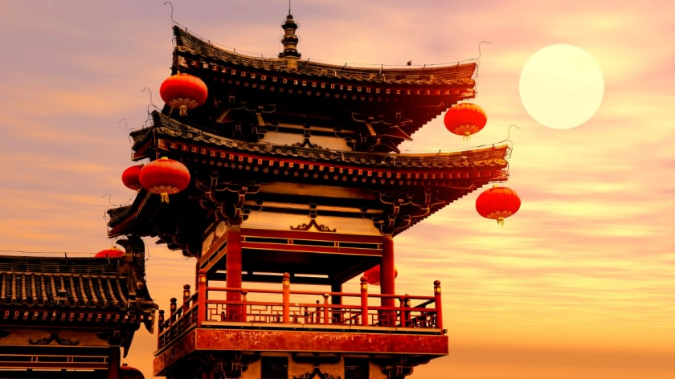

Curiosidades sobre a China
- Zongzi
- Yakisoba
- Tian bu la
- Frango do General Tso
- Mapo Tofu
- Peedan, o “ovo de mil anos”
- Dan Dan Mian
- Pato à Pequim
- Gua-Bao
- Dumplings
A China surpreende pela diversidade de suas regiões e pela maneira como preserva suas tradições mesmo diante da constante inovação. Em Xangai, os arranha-céus iluminados revelam o vigor econômico do país, enquanto mercados tradicionais e bairros históricos recordam o passado. Nas montanhas de Guilin, a neblina suave envolve os picos verdejantes, criando cenários que parecem pinturas vivas. Já no interior, aldeias antigas mantêm rituais, festivais e técnicas artesanais transmitidas por gerações. Viajar pelo território chinês é descobrir contrastes: o silêncio sereno dos jardins clássicos, a espiritualidade dos templos budistas e o ritmo acelerado das grandes metrópoles. Cada experiência revela a essência de uma cultura que valoriza a harmonia, a família e o respeito à natureza.
